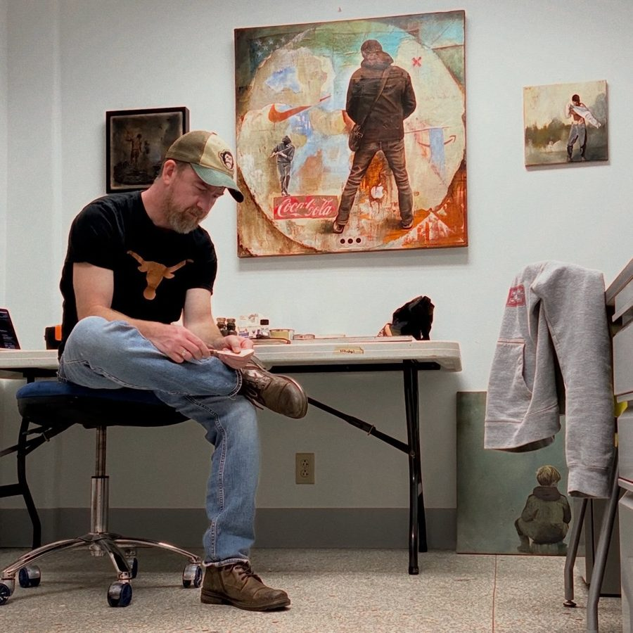

"I am interested in the space between what we see and what we experience internally. My paintings explore solitude, perception, light, and the environments that shape our emotional lives."

My fascination with light began as a child, when my father would ask, “How would you paint that?” as sunlight moved through the trees. That curiosity still drives my work today.
I paint primarily in oil, moving between figurative work and tactile explorations of surface — the Sandpaper Series grew from the patterns I saw looking into darkness. My recent paintings place solitary, contemplative figures in spaces that feel familiar yet psychologically distant. I paint to slow down and look more closely, hoping the work creates a moment of stillness — a chance to consider the unseen parts of ourselves.